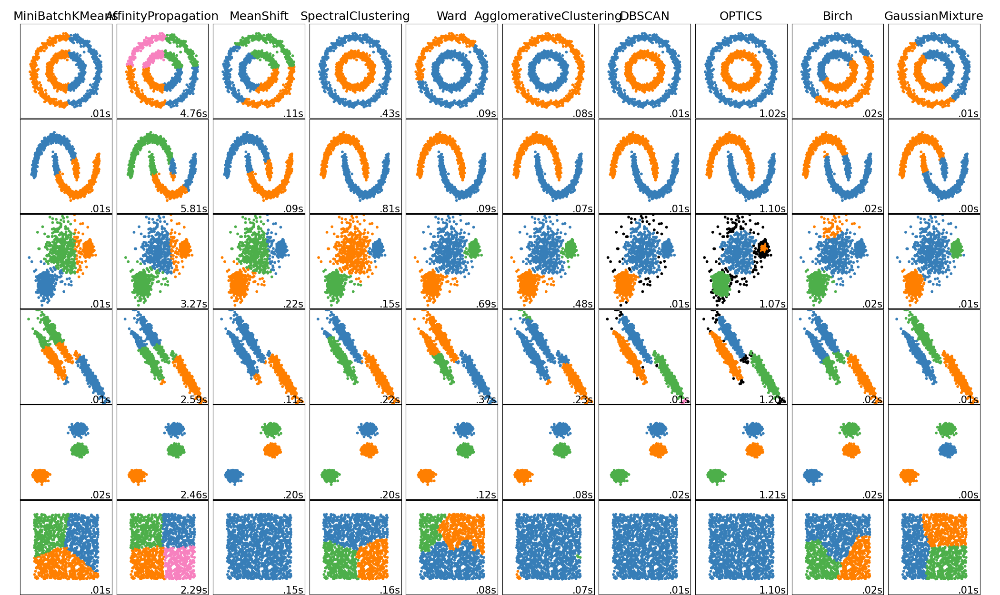

Adam D McKinnon
About
People Analytics Blog
Order By
Default
Title
Date - Oldest
Date - Newest
Author
Using ML to Predict Remuneration Levels
Using the TidyModels ecosystem to apply and tune multiple models to determine optimal performance. This approach could be used, coupling market data and existing employee…
Adam D McKinnon
May 19, 2023
Predicting Promotions Through Machine Learning
Building an XGBoost model in the Tidymodels ecosystem that predicts whether an employee should be promoted.
Adam D McKinnon
May 2, 2023
HOW TO ANALYSE THE GENDER PAY GAP ACCURATELY & EFFECTIVELY!
Describing a high level approach for accurately and comprehensively assessing the gender pay gap, and informing corrective action if needed.
Adam D McKinnon, Courtenay Howard-Bath
Apr 19, 2023
Using AI to Make Better Promotion Decisions
Examining why HR practitioners should consider using AI to inform promotion decisions, and exploring ways in which AI could be embraced in modern organisations.
Adam D McKinnon, Martha Curioni
Apr 19, 2023
Assessing Bias in ML Models
Assessing the presence of bias against minority groups in Machine Learning models to enhance their ethical strength and equality.
Adam D McKinnon
Apr 17, 2023
Expediting Exploratory Data Analysis
Experimenting with different methods to rapidly explore relationships within datasets prior to performing other analytic activities.
Adam D McKinnon
Jan 3, 2023
Automated assessment of employee data quality using machine learning
An automated, multi-dimensional and scalable approach to monitoring and improving employee data quality using unsupervised machine learning.
Martha Curioni, Adam D McKinnon
Jul 21, 2022
Forecasting Future Personnel Requirements Using Machine Learning
A practical demonstration of using machine learning to predict personnel requirements based on customer volumes.
Adam D McKinnon
Nov 13, 2021
Going the Distance!
A practical guide to measuring distance using Google Maps in R.
Adam D McKinnon
Jun 6, 2021
Measuring Impact in HR: A Practical Demonstration
A ‘How To’ article on the measurment of differences between groups in HR settings.
Adam D McKinnon, Sambit Das
Feb 12, 2021
Capturing the Sun!
Exloring Visualisations: Applying the Sunburst Visualisation in R to Synthesize Complex Relationships.
Adam D McKinnon
Feb 5, 2021
Show Me The Money! Measuring Impact Over Time
A “How To” article on the use of Causal Impact Analysis for People Analytics Practitioners.
Adam D McKinnon
Jan 5, 2021
The Value of Measuring Employee Skill Data
This article explores the two fundamental considerations when it comes to skills management. First, how do you acquire your employees’ skill data? Second, what practical…
Adam D McKinnon, Mikaël Wornoo
Dec 9, 2020
What is the Forecast for People Analytics?
An article on the use of Google Trends and the new TimeTK and ModelTime Libraries in R.
Adam D McKinnon, Monica Ashton
Oct 10, 2020
How HR can Apply Network Analysis to Open Data
This article explores how Network Analysis can be applied to a variety of Open data sources to inform people-related decisions inside organisations. Practical use cases…
Adam D McKinnon, André Vermeij
Aug 27, 2020

A People Analytics Tutorial on Unsupervised Machine Learning
A “How To” article on the use of Cluster Analysis to understand phenomenon within Organisations.
Adam D McKinnon, Monica Ashton
Aug 4, 2020
A Beginner’s Guide to Machine Learning for HR Practitioners
An introductory article intended to demistify Machine Learning (ML)–an important subset of AI–for HR Professionals.
Adam D McKinnon, Monica Ashton
Jun 19, 2020
4 Key Insights on the HR Tech Landscape… Analysis from London Unleash 2019
In this article we take a data-driven look at HR Technology, using network analysis. Specifically, we objectively examine the question ’which technologies and vendors are…
Adam D McKinnon, Leandra Griep
Mar 16, 2020
No matching items